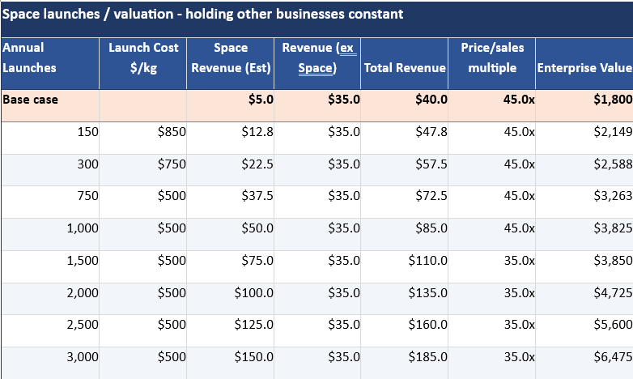
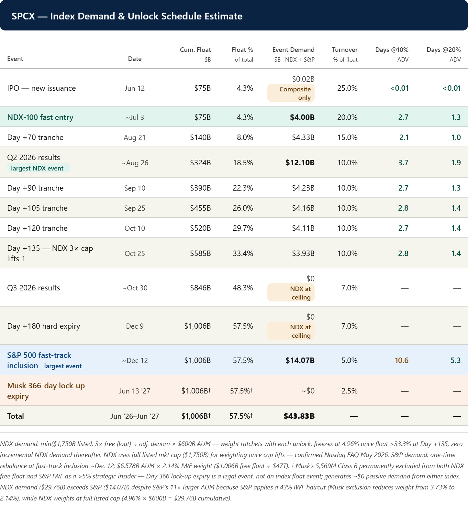
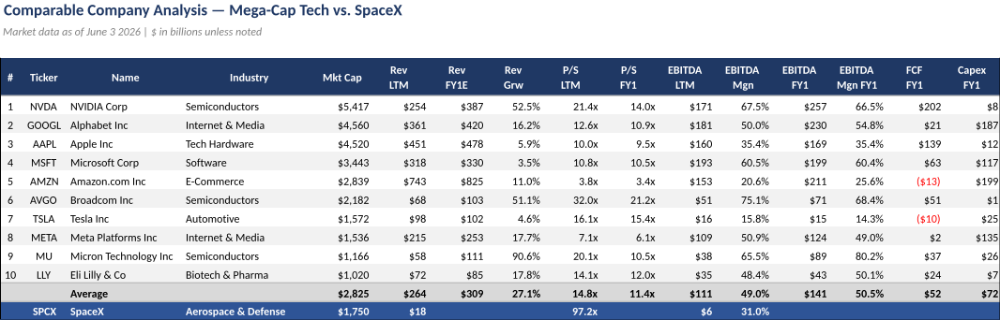
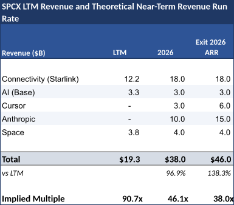

A60-Second Verdict
This is a high-upside but high-uncertainty IPO idea that deserves a watchlist file, not an immediate buy decision.
- The bull case: SpaceX is framed as an unusually large platform across space, AI infrastructure, orbital data centers, chips, connectivity, and possible physical AI.
- The catalyst case: index inclusion, Cursor option exercise, Anthropic/Colossus compute revenue, Starship launches, Starlink, Terafab, and possible Tesla integration are the main drivers.
- The valuation issue: the source argues valuation may be lower than headline price/sales if pro-forma revenue is included, but this depends on assumptions that need verification.
- The key risk: the idea requires live IPO/listing facts, current price, S-1 verification, revenue quality, free cash flow, and lock-up/unlock analysis.
Processor Decision
BSignal Scorecard
Maturity Sliders
CBasic Information
| Field | Value |
|---|---|
| Title | The SpaceX IPO - A Catalyst-Rich AI and Space Story |
| Author / sender | Dauvin Peterson, 22V Research |
| Received | 2026-06-04 23:19:18 Europe/Zurich |
| Message ID | <LJ0EHbjcQEesm0WGjz0Emw@geopod-ismtpd-17> |
| Processed content | Email body and embedded chart images. |
| Not processed | Live IPO/listing data, S-1, market prices, and external source validation were not checked in this run. |
DContent Extraction
| Thesis Part | Plain-English Explanation | Initial Route |
|---|---|---|
| Revenue stacking | The source argues recent deals and options could make current revenue much higher than simple trailing revenue suggests. | Verify |
| Index inclusion | Fast Nasdaq/S&P inclusion could create passive buying demand. | Event check |
| Cursor option | A possible stock-funded Cursor acquisition could add AI software revenue. | Confirm terms |
| Orbital data centers | Space-based data centers are a long-term optionality story tied to launch cost and capacity. | Long-term thesis |
| Terafab / Tesla integration | Potential integration across chips, vehicles, robots, and space is strategically interesting but very uncertain. | Speculative |
EContent Evaluation
| Dimension | Assessment | RAG |
|---|---|---|
| Plausibility | Medium-high. The strategic story is coherent, but many assumptions are forward-looking. | Amber |
| Evidence strength | Medium. The report includes assumptions and charts, but primary documents were not checked here. | Amber |
| Decision readiness | Low. No buy/sell decision should be made without market and S-1 validation. | Red |
FInvestment Impact
| Area | Impact | Confirmation Score | Implication |
|---|---|---|---|
| AI infrastructure thesis | Adds a new, very large possible expression of AI compute and physical infrastructure. | 7/10 | Create a watchlist candidate, not an action. |
| Space economy thesis | Turns SpaceX into a possible public-market anchor for space exposure. | 7/10 | Map comparable companies and available instruments. |
| Portfolio risk | Could be high-beta, narrative-driven, and valuation-sensitive. | 5/10 | Any future position would require strict sizing and entry discipline. |
GConcrete Actions
Include S-1, current listing status, float, valuation, revenue bridge, cash burn, and unlock schedule.
Track index inclusion, Cursor option, Starship tests, Anthropic/Colossus details, Starlink V3, and Terafab updates.
The source is not enough without live price, validated financials, and instrument availability.
HDetailed Appendix For Understanding
This appendix explains the SpaceX IPO thesis in simple language and separates facts, assumptions, and actions.
Chart Pack




The investment case is really a bundle of options, not one simple business case.
The source does not present SpaceX as only a rocket company. It frames the company as a bundle of potential options: launch services, Starlink, orbital data centers, compute deals, chips, AI software links, and possible integration with Tesla-related physical AI projects.
Revenue stacking matters because valuation can look very different depending on what revenue is counted.
The source argues that headline valuation may overstate the multiple if recent or expected deals are included in pro-forma revenue. This is important, but it must be verified because assumptions about future revenue can make an expensive IPO look more reasonable than it is.
Index inclusion could create demand, but demand mechanics do not prove long-term value.
Early index inclusion can force passive funds to buy shares. That can support price in the short term. It does not prove that the business is worth the valuation, so it should be treated as a catalyst, not the thesis itself.
The key risk is that too many catalysts must work at once.
The thesis needs several things to go right: strong launch cadence, credible revenue growth, manageable cash burn, successful AI compute economics, and investor confidence in future projects. If one large assumption fails, the valuation can be vulnerable.
ISource Handling
Recorded from Apple Mail mailbox Research Signals - New. The email was moved to Research Signals - Processed after signal capture. Obsidian note created at DragonShield Research Obsidian/01 Signals/2026/2026-06/2026-06-04 22V - SpaceX IPO AI And Space Story.md.